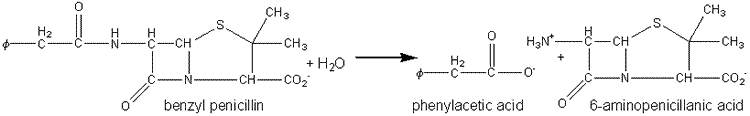
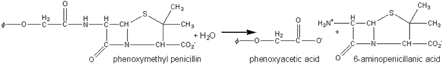
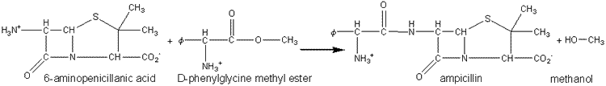

Enzyme Technology
Production of antibiotics
Benzylpenicillins and
phenoxymethylpenicillins (penicillins G and V, respectively) are produced by
fermentation and are the basic precursors of a wide range of semi-synthetic
antibiotics, e.g., ampicillin. The amide link may be hydrolysed conventionally
but the conditions necessary for its specific hydrolysis, while causing no
hydrolysis of the intrinsically more labile but pharmacologically essential b-lactam
ring, are difficult to attain. Such specific hydrolysis may be simply achieved
by use of penicillin amidases (also called penicillin acylases). Different
enzyme preparations are generally used for the hydrolysis of the penicillins G
and V, pencillin-V-amidase being much more specific than pencillin-G-amidase.
Penicillin amidase may be obtained from E.
coli and has been immobilised on a number of supports including cyanogen bromide-activated Sephadex
G200. It represents one of the earliest successful processes
involving immobilised enzymes and is generally used in batch or semicontinuous
STR processes (40,000 Ukg−1penicillin G, 35°C, pH 7.8, 2 h) where it may be
reused over 100 times. It has also been used in PBRs, where it has an active
life of over 100 days, producing about two tonnes of 6-aminopenicillanic acid
kg−1of immobolised enzyme.
 6 -aminopenicillanic acid + phenylacetic acid" width="750" height="116">
[5.8]
 6 -aminopenicillanic acid + phenoxyacetic acid" width="750" height="111">
[5.9]
The penicillin-G-amidases may be used 'in
reverse' to synthesise penicillin and cephalosporin antibiotics by non
-equilibrium kinetically controlled reactions (see also Chapter
7). Ampicillin
has been produced by the use of penicillin-G-amidase immobilised by adsorption
to DEAE -cellulose in a packed bed column:
 ampicillin + methanol" width="750" height="107">
[5.10]
Many other potential and proven antibiotics
have been synthesised in this manner, using a variety of synthetic b-lactams
and activated carboxylic acids.
Home
| Back | Next
This page was established in 2004 and last updated by Martin
Chaplin
on
6 August, 2014
|